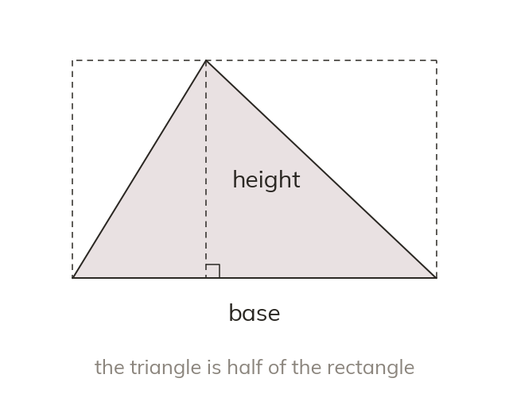

Half of a rectangle
A triangle fills half the rectangle on the same base and height. So its area is × base × perpendicular height.
A triangle fills exactly half of the rectangle drawn around it on the same base and height. So the area of a triangle is × base × perpendicular height.